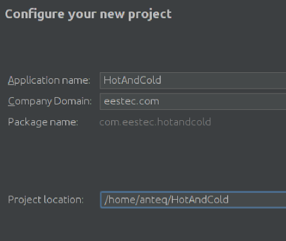
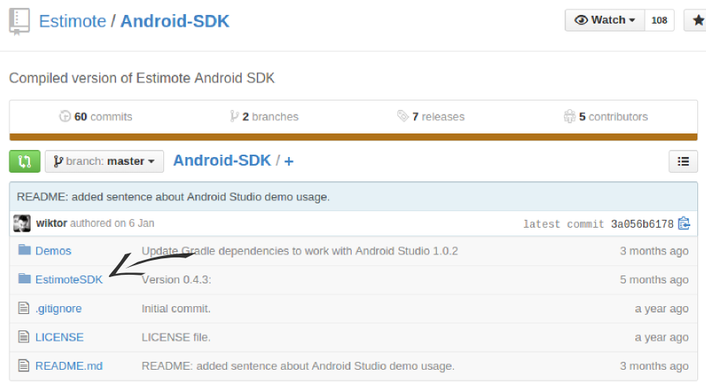
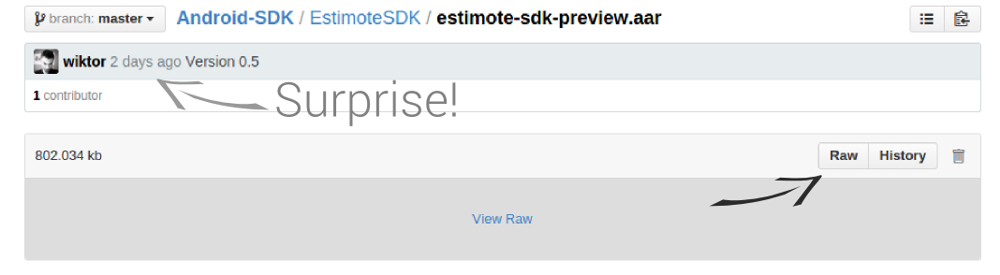
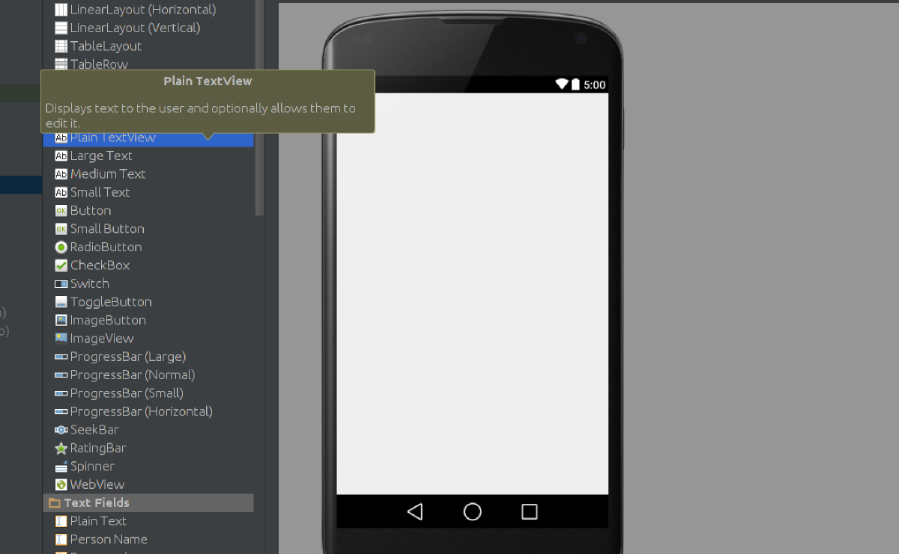

About us
Gradle
gradle.build
android {
compileSdkVersion 21
buildToolsVersion "21.1.2"
defaultConfig {
applicationId "com.workshops.helloworld"
minSdkVersion 18
targetSdkVersion 21
versionCode 1
versionName "1.0"
}
...
}
Android Manifest
<?xml version="1.0" encoding="utf-8"?>
<manifest xmlns:android="http://schemas.android.com/apk/res/android"
package="com.workshops.helloworld" >
<application
android:allowBackup="true"
android:icon="@mipmap/ic_launcher"
android:labelw="@string/app_name"
android:theme="@style/AppTheme" >
<activity
android:name=".MainActivity"
android:label="@string/app_name" >
<intent-filter>
<action android:name="android.intent.action.MAIN" />
<category android:name="android.intent.category.LAUNCHER" />
</intent-filter>
</activity>
</application>
</manifest>
Important classes
Activity
Intent
Intent intent = new Intent(Activity_starting_other_activity, ActivityToBeStarted.class);
startActivity(intent);
@Override
protected void onActivityResult(int requestCode, int resultCode, Intent intent){
if(resultCode != RESULT_OK) {
finish(); //ends activity
} else {
// do something with the information retrieved
}
}
Intent intent = new Intent(Activity_starting_other_activity, ActivityToBeStarted.class);
startActivity(intent);
@Override
protected void onActivityResult(int requestCode, int resultCode, Intent intent){
if(resultCode != RESULT_OK) {
finish(); //ends activity
} else {
// do something with the information retrieved
}
}
Bundle
Internet of Things ...
... is a network of interconnected things ...
... embedded with electronics and sensors ...
... which enables them to achieve greater value and service ...
... by exchanging and analysing data.
Smart+Connected Cities
Large scale experiment by Cisco

Rules
Run Android Studio
Create new Android project
Create new Android project
Create new Android project
Create new Android project
Create ThermometerActivity
Create ThermometerActivity
Edit AndroidManifest.xml
<manifest xmlns:android="http://schemas.android.com/apk/res/android"
package="com.eestec.hotandcold" >
// Add the permissions on the top
<uses-permission android:name="android.permission.BLUETOOTH" />
<uses-permission android:name="android.permission.BLUETOOTH_ADMIN" />
<uses-feature android:name="android.hardware.bluetooth_le" android:required="true" />
// (...)
</manifest>
Edit AndroidManifest.xml
// MainActivity
<activity
android:name=".MainActivity"
android:label="@string/app_name"
android:screenOrientation="portrait" >
<intent-filter>
<action android:name="android.intent.action.MAIN" />
<category android:name="android.intent.category.LAUNCHER" />
</intent-filter>
</activity>
Edit AndroidManifest.xml
// Thermometer Activity
<activity
android:name=".ThermometerActivity"
android:label="@string/title_activity_thermometer"
android:configChanges="orientation|keyboardHidden|screenSize"
android:parentActivityName=".MainActivity"
android:screenOrientation="portrait" >
<meta-data
android:name="android.support.PARENT_ACTIVITY"
android:value="com.eestec.hotandcold.MainActivity" />
</activity>
Enable Bluetooth
// Neccesary imports
import android.bluetooth.BluetoothAdapter;
import android.content.Intent;
// (...)
public class MainActivity extends ActionBarActivity {
BluetoothAdapter bluetoothAdapter;
int REQUEST_ENABLE_BT = 1; // must be greater than 0
public boolean bluetoothNotEnabled(){
return !bluetoothAdapter.isEnabled();
}
public void askForBluetoothAccess(){
Intent enableBluetoothIntent = new Intent(BluetoothAdapter.ACTION_REQUEST_ENABLE);
startActivityForResult(enableBluetoothIntent, REQUEST_ENABLE_BT);
}
// (...)
}
Enable Bluetooth
// MainActivity's onCreate method
@Override
protected void onCreate(Bundle savedInstanceState) {
super.onCreate(savedInstanceState);
setContentView(R.layout.activity_main);
bluetoothAdapter = BluetoothAdapter.getDefaultAdapter();
if(bluetoothNotEnabled()) askForBluetoothAccess();
}
Create a button
In activity_main.xml, drag the "Button" onto the screen.Create a button
Change its display text...Create a button
... and its ID. It'll be its unique identifier in our app.Create a button
Now, declare Button and Context objects in MainActivity.java
import android.widget.Button;
import android.content.Context;
public class MainActivity extends ActionBarActivity {
Button startButton;
Context context = this;
//(...)
}
Create a button
Keep reference to Button and override onClick().
@Override
protected void onCreate(Bundle savedInstanceState) {
//(...)
startButton = (Button)findViewById(R.id.start_button);
startButton.setOnClickListener(new View.OnClickListener() {
@Override
public void onClick(View v) {
Intent thermometerIntent = new Intent(context, ThermometerActivity.class);
startActivity(thermometerIntent);
}
});
}
Make & run
You should see an empty activity with a button, which will lead you to second empty activity.
Import Estimote SDK
Go to https://github.com/Estimote/Android-SDKImport Estimote SDK
Navigate to EstimoteSDK Import Estimote SDK
Click on estimote-sdk-preview.jarImport Estimote SDK
And download its "raw" format Import Estimote SDK
Go to /home/student/HotandCold/libs and paste there downloaded estimote-sdk-preview.jarImport Estimote SDK
Turn to Project view
Import Estimote SDK
Add it as a library to our project
Update manifest
In AndroidManifest.xml
<manifest>
<application>
(...)
<service android:name="com.estimote.sdk.service.BeaconService"
android:exported="false"/>
</application>
</manifest>
Create empty Distance class
Import SDK's objects
package com.eestec.hotandcold;
import com.estimote.sdk.Beacon;
import com.estimote.sdk.BeaconManager;
import com.estimote.sdk.Region;
import com.estimote.sdk.Utils;
public class Distance {
}
Distance class
public class Distance {
private final double MAX_BEACON_DISTANCE = 100;
static volatile double distanceToClosestBeacon;
// Constructor
public Distance(){
this.distanceToClosestBeacon = MAX_BEACON_DISTANCE;
}
}
Method calculate()
// New imports, we'll need them in a minute
import android.util.Log;
import java.util.List;
// ...
public class Distance {
// (...)
public void calculate(BeaconManager beaconManager){
// This method will be invoked from Thermometer Activity.
// It'll basically measure the distance to the nearest beacon.
}
}
Method calculate()
public void calculate(BeaconManager beaconManager){
beaconManager.setRangingListener(new BeaconManager.RangingListener() {
// we're inside a new RangingListener object
// here, we can override default behavior on event of discovering beacon
});
}
Method calculate()
public void calculate(BeaconManager beaconManager){
beaconManager.setRangingListener(new BeaconManager.RangingListener() {
@Override
public void onBeaconsDiscovered(Region region, List<Beacon> beacons) {
// here, we can actually operate on Estimote API
// we'll define the function's body on the next slide
}
});
}
Method calculate()
public void onBeaconsDiscovered(Region region, List<Beacon> beacons) {
Integer major, minor;
for (Beacon rangedBeacon : beacons) {
major = rangedBeacon.getMajor(); // that's how we can get beacon's major ID
minor = rangedBeacon.getMinor(); // and that's how we can get it's minor ID
// Estimote provides us with function to compute distance
// based on signal's strength
Double distanceToThisBeacon = Utils.computeAccuracy(rangedBeacon);
if (distanceToThisBeacon <= distanceToClosestBeacon) {
distanceToClosestBeacon = distanceToThisBeacon;
}
}
Log.d("Closest beacon found: ", Double.toString(distanceToClosestBeacon) + " away");
Log.d("Closest beacon found: ", "Its unique identifier ID is " + major.toString() + " " + minor.toString());
}
Update ThermometerActivity
Create new BeaconManager and new Region
// Moooooooaaarrr imports
import com.estimote.sdk.BeaconManager;
import com.estimote.sdk.Region;
import android.os.RemoteException;
// ...
public class ThermometerActivity extends ActionBarActivity {
private BeaconManager beaconManager;
private static final Region ALL_ESTIMOTE_BEACONS = new Region("regionId", null, null, null);
private volatile Distance distance;
// ...
}
Update ThermometerActivity
Create new instance of Distance object and invoke it in onCreate()
@Override
protected void onCreate(Bundle savedInstanceState) {
(...)
beaconManager = new BeaconManager(this);
distance = new Distance();
distance.calculate(beaconManager);
}
Update ThermometerActivity
// in ThermometerActivity class
@Override
protected void onStart() {
super.onStart();
beaconManager.connect(new BeaconManager.ServiceReadyCallback() {
@Override
public void onServiceReady() {
try {
beaconManager.startRanging(ALL_ESTIMOTE_BEACONS);
} catch (RemoteException e) {
Log.e("test", "Cannot start ranging", e);
}
}
});
}
Update ThermometerActivity
// in ThermometerActivity class
@Override
protected void onStop() {
super.onStop();
try {
beaconManager.stopRanging(ALL_ESTIMOTE_BEACONS);
} catch (RemoteException e) {
Log.e("test", "Cannot stop but it does not matter now", e);
}
beaconManager.disconnect();
}
Make and run
If everything is done OK, the distance should be visible in LogCat.Get distance from Distance.java
public class Distance {
// ...
public double getDistance(){
return distanceToClosestBeacon;
}
}
}
Edit layout
In activity_thermometer.xml, add new TextView.
Edit layout
Change its ID.
Edit ThermometerActivity.java
Declare TextView and distance to show.
import android.widget.TextView;
// ...
public class ThermometerActivity extends ActionBarActivity {
private TextView distanceText;
private volatile double currentDistance;
// ...
}
}
Edit ThermometerActivity.java
Keep reference to TextView.
@Override
protected void onCreate(Bundle savedInstanceState) {
// ...
distanceText = (TextView) findViewById(R.id.beacon_distance);
}
Edit ThermometerActivity.java
Start a new Thread.
@Override
protected void onCreate(Bundle savedInstanceState) {
// ...
thread = new Thread(){
// here, we're inside the new Thread object
@Override
public void run(){
// for the Thread to work properly, we need to override its run() method
}
};
thread.start(); // start it, when the activity is created
}
Edit ThermometerActivity.java
Get distance
@Override
public void run(){
while(???) {
try {
sleep(50);
currentDistance = 0.9*currentDistance + 0.1*distance.getDistance();
} catch (InterruptedException e) {
e.printStackTrace();
}
}
}
Edit ThermometerActivity.java
Format text
// ...
try {
// ...
String text;
// format the distance appropriately
if (currentDistance >= 1.0){
text = String.format("%.2f", currentDistance) + " m";
} else {
text = String.format("%.2f", 100*currentDistance) + " cm";
}
}
// ...
Edit ThermometerActivity.java
Post it to update UI
// ...
try {
//...
final String finalText = text;
// communicate with UI main thread
distanceText.post(new Runnable() {
public void run() {
distanceText.setText(finalText); // here we change the TextView
}
});
}
// ...
But what about the while loop?
@Override
public void run(){
while(???) { // wtf is this "???"
// we need a clever boolean, so our background Thread won't change UI forever
}
}
public class ThermometerActivity extends ActionBarActivity {
// ...
private volatile boolean showProximity = true;
@Override
protected void onCreate(Bundle savedInstanceState) {
(...)
thread = new Thread(){
@Override
public void run(){
while(showProximity) {
// ...
}
}
}
@Override
protected void onStop() {
// ...
showProximity = false;
}
}
Make and run
It should work!